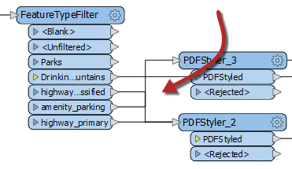
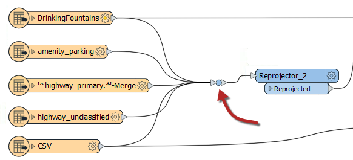
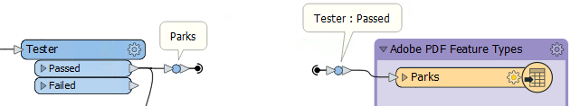

After completing this unit, you’ll be able to:
Object positioning is only part of a good layout. The other key part is the connection style.
As with the positioning of workspace objects, the care taken in connecting them can make the difference between a poorly-designed workspace and one that is visually attractive and efficient.
Connections are the lines between objects on the workspace canvas. There are three different styles of connection that you can create in Workbench:
You can switch between styles in the FME Options menu (Tools > FME Options > Appearance > Canvas > Connection Path), or the shortcut Ctrl+Shift+C. This image shows a comparison of the three styles:
Once more, there is no right or wrong choice about which style to use; it is a personal preference. However, object layout and connection style are related; the best FME authors will vary the objects' position according to the connection style used to avoid issues like overlapping connections.
Custom Connection Styles
You can also use custom connection styles to highlight certain connections in your workspace. For example, you can color-code connections based on what data they contain or change connection thickness based on estimated data volume.
One of the most conspicuous failings of a workspace design is to have connections that cross over each other, for example like this:

The intent of a connection is compromised when it overlaps with another connection or object on the canvas. However, the choice of connection style affects the possibility of overlap occurring. For example, curved connections tend to cross over more than straight ones:

...and squared connections can sometimes cross in ways that are difficult to decipher:

Because these issues can spring up when you switch connection style, it's wise to choose a particular connection style and layout technique and stick with it. For example, in a curved connection workspace, transformers could perhaps be spaced more widely to avoid overlaps.
There is one transformer in FME Workbench that enhances the layout of objects and connections: the Junction.

This transformer is a small, node-like object that carries out no function on the data but is instead used to tidy connections within a workspace - as in the above screenshot. This trait makes it an excellent tool for best practice.
As with any other transformer, you can connect a junction to an Inspector or Logger, and you can attach annotation objects to it. It also works with both Quick Add, Drag/Connect functionality, and Feature Caching.
The ability to hide connections is handy for avoiding overlaps. To hide a connection, right-click on it and choose the option to Hide:

A hidden connection is represented by a 'transmitter' icon or by a greyed-out dashed line when the object at one end of the connection is selected:

You must select the object (transformer or feature type) for the connection to be visible. It is best to hide connections you consider less important and don't want the user to see by default.
The other available option is "Create Tunnel." This choice creates a hidden connection with the addition of an annotated junction transformer at each end:

A tunnel makes a hidden connection slightly more apparent, plus allows for annotation at each end. Tunnels help make connections across a large workspace without requiring the user to follow a long connection line.
To view hidden connections, click on an object at either end. The connection appears as a greyed-out dashed line.
To return a connection to view, right-click an object to which it is connected and choose Show Connection(s).